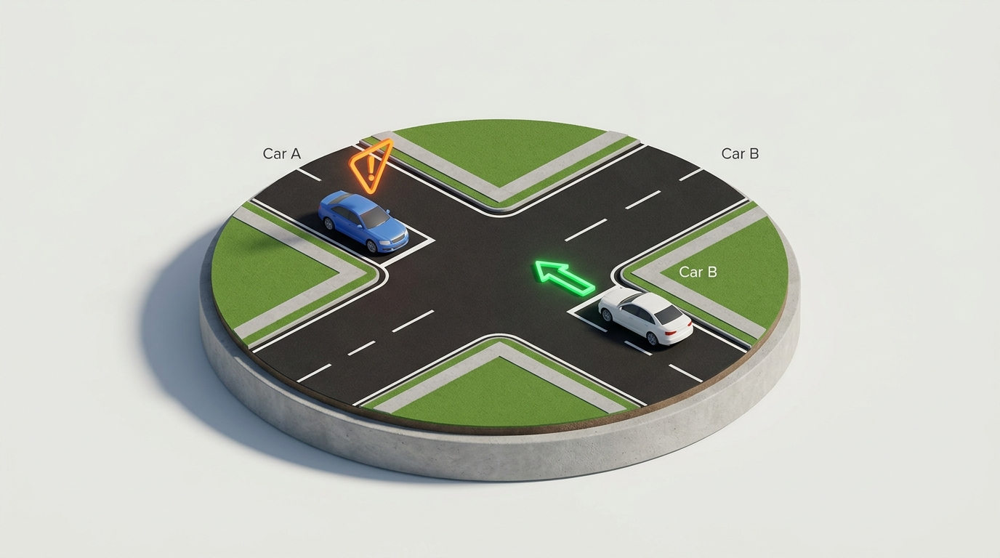

Right-of-Way: Given, Not Taken
Texas Transportation Code § 545.151 establishes a foundational legal doctrine: Texas law never actually grants any driver an absolute, inherent right to proceed. It only establishes which vehicle has the affirmative statutory duty to yield. Right-of-way is something given by others or proactively surrendered to preserve human life.

The Fundamental Texas Mandate
"Right-of-way is given, not taken." If another driver fails to yield where legally required, you are not authorized to force the issue. Texas Transportation Code demands reasonable prudence to avoid collision regardless of who possessed initial theoretical precedence.
01 // INTERACTIVE PRIORITY SEQUENCER
Determine Right-of-Way at an Uncontrolled Intersection
Drag the sequence numbers onto the vehicles to determine who has the right-of-way.
If two vehicles approach simultaneously, the driver on the left must yield the right-of-way to the vehicle on the immediate right. Car A departs before Car B; Car B departs before Car C.
Vehicles traversing a terminating street entering or crossing an intersecting through-street must unconditionally yield right-of-way to all through traffic.
Unpaved caliche/gravel access roadways must surrender precedence to paved highway travelers. Frontage road drivers must yield to vehicles exiting high-speed freeway off-ramps.
02 // VULNERABLE ROAD USER SAFETY
Yielding to Motorcyclists
Motorcycles present small optical profiles that vanish into vehicle blind spots. Texas leads the nation in left-turn failure-to-yield crashes involving two-wheeled riders.
(Mirror Blind Area)
"Sorry Mate, I Didn't See You." Because a motorcycle's profile is narrow, human saccadic vision frequently skips over it during left turns across oncoming lanes. Always double-look before turning across traffic.
Motorcycles can stop far more abruptly than full-sized passenger trucks via engine compression and multi-caliper braking. Tailgating leaves insufficient reaction cushion.
03 // STATUTORY ACCOUNTABILITY
Consequences for Failure to Yield
Texas law imposes strict statutory penalties when failure to yield causes collisions, elevating systematically based on medical severity.
+2 Points on DPS record; Mandatory 180-Day Driver License Suspension
Texas Transportation Code § 545.151 & § 542.401